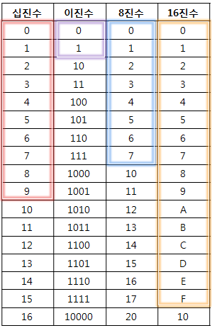

- 숫자를 표현하는 방식, 즉 기수(base)를 기준으로 하는 수를 나타내는 체계.
- 컴퓨터는 2진법을 주로 사용하며, 10진법, 8진법, 16진법 등 다양한 진법이 사용.
- 2진법 외에도 8진법, 16진법 등 다른 진법도 컴퓨터에서 사용되는데, 이는 2진법을 사람이 더 쉽게 이해하고 활용
- 각 진법은 특정 기수를 사용하여 수를 나타내며, 2진법은 0과 1 두 개의 숫자로, 10진법은 0부터 9까지의 10개의 숫자로 수를 표현.
- 컴퓨터는 전기의 흐름을 0과 1로 표현하기 때문에 2진법을 사용합니다.
- 다른 진법은 2진법으로 변환하여 처리할 수 있으므로, 컴퓨터는 다양한 진법을 지원합니다.
- 예를 들어, 프로그래밍 언어에서 16진수를 사용하는 것은 2진수의 긴 문자열을 보다 간결하게 표현하기 위함입니다.
